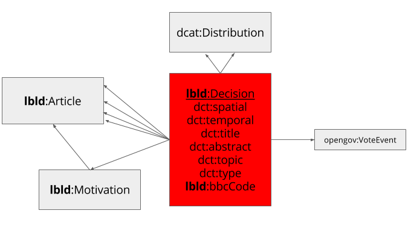

Linked Decisions as Linked Data (lblod) is a project for an interoperable ecosystem of local decisions. A project in 2016 carried out by iMinds created a proof of concept in co-creation with local authorities in Flanders, the regional government of Flanders, and different service providers. The result of the proof of concept contain, but are not limited to, this vocabulary, a proof of concept of a Linked Data authoring environment, a server harvesting local decisions using The DataTank, a search interface through the harvested data and a persistent URI creator.
This document is part of a proof of concept and will not be under active development after June 2016. It is up to future projects to extend the results of this proof of concept into a maintained vocabulary.

The LBLD vocabulary: metadata for local decisions
Only a few URIs are defined within the lbld namespace. This schema provides an overview of the to be used URIs when linking the data together. The URIs defined by us can be found at todo.
Only a few URIs are defined within the lbld namespace. This schema provides an overview of the to b eused URIs when linking the data together. The URIs defined by us can be found at todo.
http://decisions.data.vlaanderen.be/ns#Decision
A decision is a case that passed through a process.